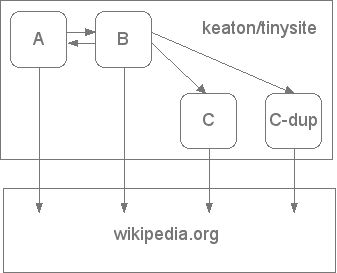
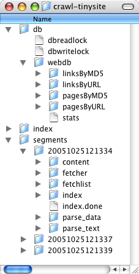
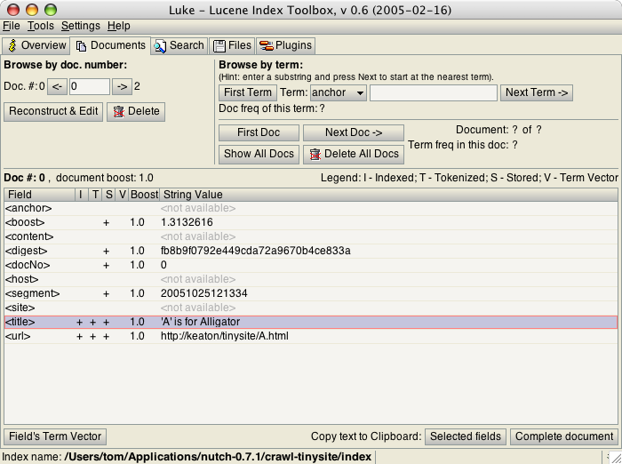

by Tom White
__/__/2005
Nutch is an open-source Java implementation of a search engine. It provides all the tools you need to run your own search engine. But why would anyone want to run their own search engine? After all, there's always Google. There are at least three reasons.
Nutch installations typically operate at one of three scales: local filesystem, intranet, or whole web. All three have different characteristics. For instance, crawling a local filesystem is reliable compared to the other two since network errors don't occur, and caching copies of the page content is unnecessary (and actually a waste of disk space). Whole-web crawling lies at the other extreme: crawling billions of pages creates a whole host of engineering problems to be solved: Which pages do we start with? How do we partition the work between a set of crawlers? How often do we re-crawl? How do we cope with broken links, unresponsive sites, unintelligible or duplicate content? There is another set of challenges to solve to deliver scalable search - how do we cope with hundreds of concurrent queries on such a large dataset? Building a whole-web search engine is a major investment. In Building Nutch: Open Source Search, authors Mike Cafarella and Doug Cutting (the prime movers behind Nutch) conclude that
...a complete system might cost anywhere between $800 per month for two-search-per-second performance over 100 million pages, to $30,000 per month for 50-page-per-second performance over 1 billion pages.
This series of two articles shows you how to use Nutch at the more modest intranet scale (note that you may see this term being used to cover sites that are actually on the public internet - the point is the size of the crawl being undertaken, which ranges from a single site to tens, or possibly hundreds, of sites.) This first article concentrates on crawling: the architecture of the Nutch crawler, how to run a crawl, and understanding what it generates. The second looks at searching, and shows you how to run the Nutch search application, ways to customise it, and considerations for running a real-world system.
Nutch is built on top of Lucene, which is an API for text indexing and searching. A common question is: should I use Lucene or Nutch? The simple answer is that you should use Lucene if you don't need a web crawler. A common scenario is that you have a web front-end to a database that you want to make searchable. The best way to do this is to index the data directly from the database using the Lucene API, then write code to do searches against the index, again using Lucene. Erik Hatcher and Otis Gospodnetić's Lucene in Action gives all the details. Nutch is a better fit for sites where you don't have direct access to the underlying data, or it comes from disparate sources.
Nutch divides naturally into two pieces: the crawler and the searcher. The crawler fetches pages and turns them into an inverted index, which the searcher uses to answer users' search queries. The interface between the two pieces is the index, so apart from an agreement about the fields in the index, the two are highly decoupled. (Actually, it is a little more complicated than this, since the page content is not stored in the index, so the searcher needs access to the segments described below in order to produce page summaries and to provide access to cached pages.)
The main practical spin-off from this design is that the crawler and searcher systems can be scaled independently on separate hardware platforms. For instance, a highly-trafficked search page that supports search for a relatively modest set of sites may only need a correspondingly modest investment in the crawler infrastructure, while requiring more substantial resources for supporting the searcher.
We will look at the Nutch crawler here, and leave discussion of the searcher to Part 2.
The crawler system is driven by the Nutch crawl tool, and a family of related tools to build and maintain several types of data structure, including the web database, a set of segments, and the index. We describe all of these in more detail next.
The web database, or WebDB, is a specialised persistent data structure for mirroring the structure and properties of the web graph being crawled. It persists as long as the web graph that is being crawled (and re-crawled) exists, which may be months or years. The WebDB is used only by the crawler and does not play any role during searching. The WebDB stores two types of entities: pages and links. A page represents a page on the web, and is indexed by its URL and the MD5 hash of its contents. Other pertinent information is stored too, including the number of links in the page (also called outlinks), fetch information (such as when the page is due to be refetched) and the page's score, which is a measure of how important the page is (for example, one measure of importance awards high scores to pages that are linked to from many other pages). A link represents a link from one web page (the source) to another (the target). So in the WebDB web graph, the nodes are pages and the edges are links.
A segment is a collection of pages fetched and indexed by the crawler in a single run. The fetchlist for a segment is a list of URLs for the crawler to fetch, and is generated from the WebDB. The fetcher output is the data retrieved from the pages in the fetchlist. The fetcher output for the segment is indexed and the index is stored in the segment. Any given segment has a limited lifespan since it is obsolete as soon as all its pages have been re-crawled. The default re-fetch interval is 30 days, so it is usually a good idea to delete segments older than this, particularly as they take up so much disk space. Segments are named by the date and time they were created, so it easy to tell how old they are.
The index is the inverted index of all the pages the system has retrieved, and is created by merging all of the individual segment indexes. Nutch uses Lucene for its indexing, so all the Lucene tools and APIs are available to interact with the generated index. Since it has the potential to cause confusion it is worth mentioning that the Lucene index format has a concept of segments too, and these are different to Nutch segments. A Lucene segment is a portion of a Lucene index, whereas a Nutch segment is a fetched and indexed portion of the WebDB.
Now we have some terminology it is worth trying to understand the crawl tool, since it does a lot behind the scenes. Crawling is a cyclical process: the crawler generates a set of fetchlists from the WebDB, a set of fetchers download the content from the web, the crawler updates the WebDB with new links that were found, then the crawler generates a new set of fetchlists (for links that haven't been fetched for a given period, including the new links found in the previous cycle) and the cycle repeats. This cycle is often referred to as the generate/fetch/update cycle, and runs periodically as long as you want to keep your search index up-to-date.
URLs with the same host are always assigned to the same fetchlist. This is done for reasons of politeness, so that a web site is not overloaded with requests from multiple fetchers in rapid succession. Nutch observes the Robots Exclusion Protocol which allows site owners to control which parts of their site may be crawled.
The crawl tool is actually a front-end to other, lower-level tools, so it is possible to get the same results by running the lower-level tools in a particular sequence. Here is a breakdown of what crawl does, with the lower-level tool names in brackets:
admin db -create]inject]generate]fetch]updatedb]updatesegs]index]dedup]merge]After creating a new WebDB (step 1), the generate/fetch/update cycle (steps 3 - 6) is bootstrapped by populating the WebDB with some seed URLs (step 2). When this cycle has finished, the crawler goes on to create an index from all the segments (steps 7 - 10). Each segment is indexed independently (step 8), before duplicate pages (that is, pages at different URLs with the same content) are removed (step 9). Finally, the individual indexes are combined into a single index (step 10).
The dedup tool can remove duplicate URLs from the segment indexes. This is not to remove multiple fetches of the same URL because the URL has been duplicated in the WebDB - this cannot happen since the WebDB does not allow duplicate URL entries. Instead, duplicates can arise if a URL is re-fetched and the old segment for the previous fetch still exists (because it hasn't been deleted). This situation can't arise during a single run of the crawl tool, but it can during re-crawls, so this is why dedup also removes duplicate URLs.
While the crawl tool is a great way to get started with crawling websites, you will need to use the lower-level tools to perform re-crawls and other maintenance on the data structures built during the initial crawl. We shall see how to do this in the real-world example later in Part 2. Also, crawl is really aimed at intranet-scale crawling, for doing a whole web crawl, you should start with the lower-level tools. (See the resources for more information.)
All of Nutch's configuration files are found in the conf subdirectory of the Nutch distribution. The main configuration file is conf/nutch-default.xml. As the name suggests it contains the default settings, and should not be modified. To change a setting you create conf/nutch-site.xml, and add your site-specific overrides.
Nutch defines various extension points which allow developers to customize Nutch's behavior by writing plugins, found in the plugins subdirectory. Nutch's parsing and indexing functionality is implemented almost entirely by plugins - it is not in the core code. For instance, the code for parsing HTML is provided by the HTML document parsing plugin, parse-html. You can control which plugins are available to Nutch with the plugin.includes and plugin.excludes properties in the main configuration file.
With this background let's run a crawl on a toy site to get a feel for what the Nutch crawler does.
First download the latest Nutch distribution and unpack it on your system (I used version 0.7.1). To use the Nutch tools you will need to make sure the NUTCH_JAVA_HOME or JAVA_HOME environment variable is set to tell Nutch where Java is installed.
I created a contrived example with just four pages to understand the steps involved in the crawl process. Figure 1 illustrates the links between pages. C and C-dup (C-duplicate) have identical content.

Figure 1. The site structure for the site we are going to crawl.
Before we run the crawler, create a file called urls that contains the root URLs to populate the initial fetchlist from. In this case, we'll start from page A.
echo 'http://keaton/tinysite/A.html' > urls
The crawl tool uses a filter to decide which URLs go into the WebDB (in steps 2 and 5 in the breakdown of crawl above). This can be used to restrict the crawl to URLs that match any given pattern, specified by regular expressions. Here we just restrict the domain to the server on my intranet (keaton), by changing the line in the configuration file conf/crawl-urlfilter.txt from
+^http://([a-z0-9]*\.)*MY.DOMAIN.NAME/to
+^http://keaton/Now we are ready to crawl, which we do with a single command:
bin/nutch crawl urls -dir crawl-tinysite -depth 3 >& crawl.log
The crawl uses the root URLs in urls to start the crawl, and puts the results of the crawl in the directory crawl-tinysite. The crawler logs its activity to crawl.log. The -depth flag tells the crawler how many generate/fetch/update cycles to carry out to get full page coverage. Three is enough to reach all pages in this example, but for real sites it is best to start with five (the default), and increase it if you find some pages aren't being reached.
We shall now look at the data structures crawl has produced in some detail.
If we peek into the crawl-tinysite directory we find three subdirectories: db, segments, and index (see Figure 2). These contain the WebDB, the segments, and the Lucene index respectively.

Figure 2. The directories and files created after running the crawl tool.
Nutch comes with several tools for examining the data structures it builds, so let's use them to see what the crawl has created.
The first thing to look at is the number of pages and links in the database. This is useful as a sanity check to give us some confidence that the crawler did indeed crawl the site, and how much of it. The readdb tool parses the WebDB and displays portions of it in human-readable form. We use the -stats option here:
bin/nutch readdb crawl-tinysite/db -statswhich displays
Number of pages: 4
Number of links: 4
As expected, there are four pages in the WebDB (A, B, C, C-duplicate) and four links between them. The links to Wikipedia are not in the WebDB since they did match the pattern in the URL filter file. Both C and C-duplicate are in the WebDB since the WebDB doesn't de-duplicate pages by content, only by URL (which is why A isn't in twice).
Next, we can dump all of the pages, by using a different option to readdb:
bin/nutch readdb crawl-tinysite/db -dumppageurlwhich gives:
Page 1: Version: 4
URL: http://keaton/tinysite/A.html
ID: fb8b9f0792e449cda72a9670b4ce833a
Next fetch: Thu Nov 24 11:13:35 GMT 2005
Retries since fetch: 0
Retry interval: 30 days
Num outlinks: 1
Score: 1.0
NextScore: 1.0
Page 2: Version: 4
URL: http://keaton/tinysite/B.html
ID: 404db2bd139307b0e1b696d3a1a772b4
Next fetch: Thu Nov 24 11:13:37 GMT 2005
Retries since fetch: 0
Retry interval: 30 days
Num outlinks: 3
Score: 1.0
NextScore: 1.0
Page 3: Version: 4
URL: http://keaton/tinysite/C-duplicate.html
ID: be7e0a5c7ad9d98dd3a518838afd5276
Next fetch: Thu Nov 24 11:13:39 GMT 2005
Retries since fetch: 0
Retry interval: 30 days
Num outlinks: 0
Score: 1.0
NextScore: 1.0
Page 4: Version: 4
URL: http://keaton/tinysite/C.html
ID: be7e0a5c7ad9d98dd3a518838afd5276
Next fetch: Thu Nov 24 11:13:40 GMT 2005
Retries since fetch: 0
Retry interval: 30 days
Num outlinks: 0
Score: 1.0
NextScore: 1.0Each page appears in a separate block, with one field per line. The ID field is the MD5 hash of the page contents: note that C and C-duplicate have the same ID. There is also information about when the pages should be next fetched, which defaults to 30 days, and page scores. It is easy to dump the structure of the web graph too:
bin/nutch readdb crawl-tinysite/db -dumplinkswhich produces
from http://keaton/tinysite/B.html
to http://keaton/tinysite/A.html
to http://keaton/tinysite/C-duplicate.html
to http://keaton/tinysite/C.html
from http://keaton/tinysite/A.html
to http://keaton/tinysite/B.html
For sites larger than a few pages it is less useful to dump the WebDB in full using these verbose formats. The readdb tool also supports extraction of an individual page or link by URL or MD5 hash. For example, to examine the links to page B, issue the command
bin/nutch readdb crawl-tinysite/db -linkurl http://keaton/tinysite/B.htmlto get
Found 1 links.
Link 0: Version: 5
ID: fb8b9f0792e449cda72a9670b4ce833a
DomainID: 3625484895915226548
URL: http://keaton/tinysite/B.html
AnchorText: B
targetHasOutlink: trueNotice that the ID is the MD5 hash of the source page A.
There are other ways to inspect the WebDB. The admin tool can produce a dump of the whole database in plain text tabular form, with one entry per line, using the -textdump option. This format is handy for processing with scripts. The most flexible way of reading the WebDB is through the Java interface. See the Nutch source code and API documentation for more details. A good starting point is org.apache.nutch.db.WebDBReader, which is the Java class that implements the functionality of the readdb tool (readdb is actually just a synonym for org.apache.nutch.db.WebDBReader).
The crawl created three segments in timestamped subdirectories in the segments directory, one for each generate/fetch/update cycle. The segread tool gives a useful summary of all the segments:
bin/nutch segread -list -dir crawl-tinysite/segments/giving the following tabular output (slightly reformatted to fit this page):
PARSED? STARTED FINISHED COUNT DIR NAME
true 20051025-12:13:35 20051025-12:13:35 1 crawl-tinysite/segments/20051025121334
true 20051025-12:13:37 20051025-12:13:37 1 crawl-tinysite/segments/20051025121337
true 20051025-12:13:39 20051025-12:13:39 2 crawl-tinysite/segments/20051025121339
TOTAL: 4 entries in 3 segments.
The PARSED? column is always true when using the crawl tool. This column is useful when running fetchers with parsing turned off, to be run later as a separate process.
The STARTED and FINISHED columns indicate the time when fetching started and finished. This information is invaluable for bigger crawls when tracking down why crawling is taking a long time.
The COUNT column shows the number of fetched pages in the segment. The last segment, for example, has two entries, corresponding to pages C and C-duplicate.
Sometimes it is necessary to find out in more detail what is in a particular segment. This is done using the -dump option for segread. Here we dump the first segment (again, slightly reformatted to fit this page):
s=`ls -d crawl-tinysite/segments/* | head -1`
bin/nutch segread -dump $s
Recno:: 0
FetcherOutput::
FetchListEntry: version: 2
fetch: true
page: Version: 4
URL: http://keaton/tinysite/A.html
ID: 6cf980375ed1312a0ef1d77fd1760a3e
Next fetch: Tue Nov 01 11:13:34 GMT 2005
Retries since fetch: 0
Retry interval: 30 days
Num outlinks: 0
Score: 1.0
NextScore: 1.0
anchors: 1
anchor: A
Fetch Result:
MD5Hash: fb8b9f0792e449cda72a9670b4ce833a
ProtocolStatus: success(1), lastModified=0
FetchDate: Tue Oct 25 12:13:35 BST 2005
Content::
url: http://keaton/tinysite/A.html
base: http://keaton/tinysite/A.html
contentType: text/html
metadata: {Date=Tue, 25 Oct 2005 11:13:34 GMT, Server=Apache-Coyote/1.1,
Connection=close, Content-Type=text/html, ETag=W/"1106-1130238131000",
Last-Modified=Tue, 25 Oct 2005 11:02:11 GMT, Content-Length=1106}
Content:
<?xml version="1.0" encoding="UTF-8"?>
<!DOCTYPE html
PUBLIC "-//W3C//DTD XHTML 1.0 Strict//EN"
"http://www.w3.org/TR/xhtml1/DTD/xhtml1-strict.dtd">
<html xmlns="http://www.w3.org/1999/xhtml" xml:lang="en" lang="en">
<head>
<title>'A' is for Alligator</title>
</head>
<body>
<p>
Alligators live in freshwater environments such as ponds,
marshes, rivers and swamps. Although alligators have
heavy bodies and slow metabolisms, they are capable of
short bursts of speed that can exceed 30 miles per hour.
Alligators' main prey are smaller animals that they can kill
and eat with a single bite. Alligators may kill larger prey
by grabbing it and dragging it in the water to drown.
Food items that can't be eaten in one bite are either allowed
to rot or are rendered by biting and then spinning or
convulsing wildly until bite size pieces are torn off.
(From
<a href="http://en.wikipedia.org/wiki/Alligator">the
Wikipedia entry for Alligator</a>.)
</p>
<p><a href="B.html">B</a></p>
</body>
</html>
ParseData::
Status: success(1,0)
Title: 'A' is for Alligator
Outlinks: 2
outlink: toUrl: http://en.wikipedia.org/wiki/Alligator
anchor: the Wikipedia entry for Alligator
outlink: toUrl: http://keaton/tinysite/B.html anchor: B
Metadata: {Date=Tue, 25 Oct 2005 11:13:34 GMT,
CharEncodingForConversion=windows-1252, Server=Apache-Coyote/1.1,
Last-Modified=Tue, 25 Oct 2005 11:02:11 GMT, ETag=W/"1106-1130238131000",
Content-Type=text/html, Connection=close, Content-Length=1106}
ParseText::
'A' is for Alligator Alligators live in freshwater environments such
as ponds, marshes, rivers and swamps. Although alligators have heavy
bodies and slow metabolisms, they are capable of short bursts of
speed that can exceed 30 miles per hour. Alligators' main prey are
smaller animals that they can kill and eat with a single bite.
Alligators may kill larger prey by grabbing it and dragging it in
the water to drown. Food items that can't be eaten in one bite are
either allowed to rot or are rendered by biting and then spinning or
convulsing wildly until bite size pieces are torn off.
(From the Wikipedia entry for Alligator .) B
There's a lot of data for each entry - remember this is just a single entry, for page A - but it breaks down into the following categories: fetch data, raw content, and parsed content. The fetch data, indicated by the FetcherOutput section, is data gathered by the fetcher to be propagated back to the WebDB during the update part of the generate/fetch/update cycle.
The raw content, indicated by the Content section, contains the page contents as retrieved by the fetcher, including HTTP headers and other meta-data. (By default the protocol-httpclient plugin is used to do this work.) This content is returned when you ask Nutch search for a cached copy of the page. You can see the HTML page for page A in this example.
Finally, the raw content is parsed using an appropriate parser plugin - determined by looking at the content type and then the file extension - in this case, parse-html was used since the content type is text/html. The parsed content (indicated by the ParseData and ParseText sections) is used by the indexer to create the segment index.
The tool of choice for examining Lucene indexes is Luke. Luke allows you to look at individual documents in an index, as well as perform ad hoc queries. Figure 3 shows the merged index for our example, found in the index directory.

Figure 3. Browsing the merged index in Luke (click for full-size image)
Recall that the merged index is created by combining all of the segment indexes after duplicate pages have been removed. In fact, if you use Luke to browse the index for the last segment (found in the index subdirectory of the segment) you will see that page C-duplicate has been removed from the index. Hence, the merged index only has three documents, corresponding to pages A, B, and C.
Figure 3 shows the fields for page A. Most are self-explanatory, but the boost field deserves a mention. It is calculated on the basis of the number of pages linking to this page - the more pages that link to the page, the higher the boost. The boost is not proportional to the number of inbound links, instead it is damped logarithmically. The formula used is ln(e + n), where n is the number of inbound links. In our example, only page B links to page A, so there is only one inbound link, and the boost works out as ln(e + 1) = 1.3132616...
You might be wondering how the boost field is related to the page score that is stored in the WebDB and the segment fetcher output. The boost field is actually calculated by multiplying the page score by the formula in the previous paragraph. For our crawl, indeed for all crawls performed using the crawl tool, the page scores are always 1.0, so the boosts depend simply on the number of inbound links.
So when are page scores not 1.0? Nutch comes with a tool for performing link analysis, LinkAnalysisTool, which uses an algorithm like Google's PageRank to assign a score to each page based on how many pages link to it (and weighted according to the score of these linking pages). Notice that this is a recursive definition, and it is for this reason that link analysis is expensive to compute. Luckily, intranet search usually works fine without link analysis, which is why it is not a part of the crawl tool, but it is a key part of whole web search - indeed, PageRank was crucial to Google's success.
In this article we looked at the Nutch crawler in some detail. The second article will show how to get the Nutch search application running against the results of a crawl.
mapred. This means that you need to build it yourself if you want to use it, however it is likely to make it into the main trunk of development soon.Thanks to Doug Cutting and Piotr Kosiorowski for their feedback and helpful suggestions.
This article is for my younger daughter Charlotte who learned to crawl while I was writing it.
{kind=link}